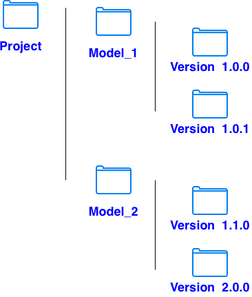

# Shell export MLFLOW_TRACKING_URI="https://gitlab.com/api/v4/projects/[project_id]/ml/mlflow" export MLFLOW_TRACKING_TOKEN="personal_token"
from mlflow import MlflowClient
MODEL_NAME = "fraud-detector"
MODEL_VERSION = "1.0.1"
MODEL_FILE = "model.pkl"
client = MlflowClient() # use the parameters in configuration to connect GitLab
# 1. Create the registered model
try:
client.create_registered_model(
MODEL_NAME,
description="California Housing Model"
)
except Exception:
print("Model already exists")
# 2. Create a model version
model_version = client.create_model_version(
name=MODEL_NAME,
source="",
description="First production candidate"
)
# 3. Get the run_id attached to this model version
run_id = model_version.run_id
print("Model version:", model_version.version)
print("run_id:", run_id)
# 4. Push model artifact to that run_id
client.log_artifact(
run_id=run_id,
local_path=MODEL_FILE
)
# 5. Push performance metrics to that run_id
client.log_metric(run_id, "accuracy", 0.91)
client.log_metric(run_id, "precision", 0.88)
client.log_metric(run_id, "recall", 0.84)
client.log_metric(run_id, "f1_score", 0.86)
client.log_metric(run_id, "auc", 0.93)
# 6. Push model parameters
client.log_param(run_id, "model_type", "RandomForest")
client.log_param(run_id, "n_estimators", 200)
client.log_param(run_id, "max_depth", 8)
import requests
url = "https://gitlab.com/[namespace]/[project_name]/-/package_files/[package_file_id]/download" # model url
token = "personal_token"
headers = {
"PRIVATE-TOKEN": token
}
response = requests.get(url, headers=headers)
if response.status_code == 200:
with open("model.pkl", "wb") as f:
f.write(response.content)
print("Downloaded model.pkl")
else:
print("Failed:", response.status_code)
print(response.text)